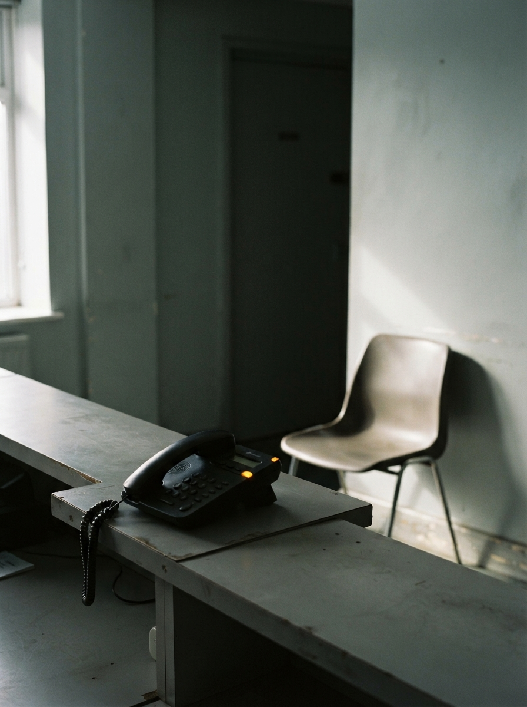

RADAR
N°2
14 — 21 AGO 2026
Tecnología · Operación · Inteligencia
Tema central · la recepción
BUZÓN
se come
la silla
Si el teléfono queda en el buzón, 7 de cada 10 no dejan recado. El hueco de la agenda ya se decidió.
Revista semanal
Wavys Technologies
Wavys Technologies
Lo que pasó de IA esta semana
y qué te cambia el lunes
y qué te cambia el lunes